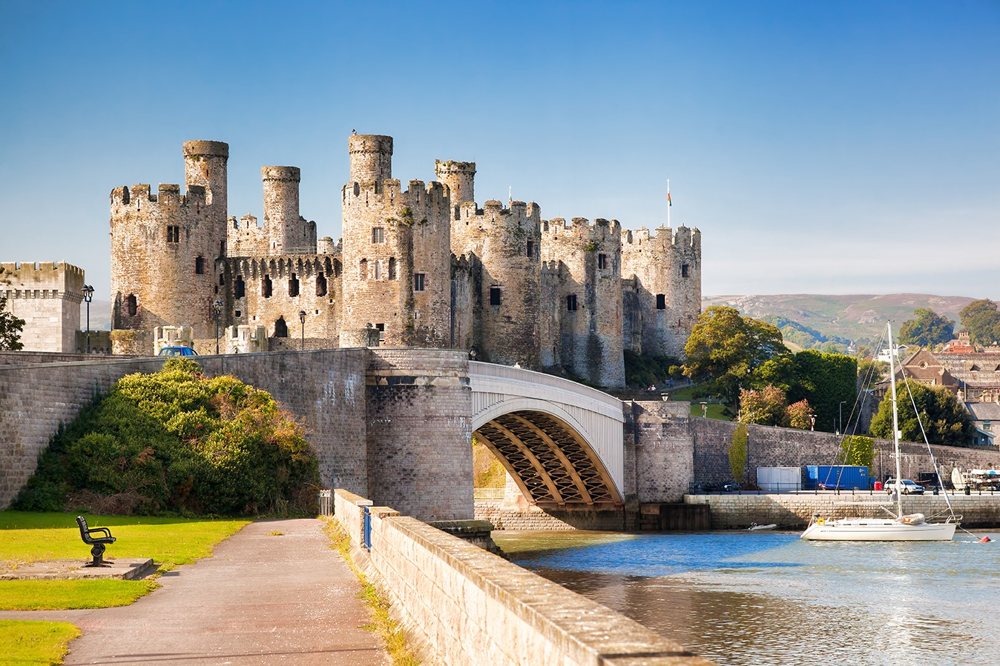

Check out what Wales has to offer for your next visit
Wales
.
Wales is part of the United Kingdom, located to the west side of England.
With it's vast history and amazing scenery, there is bound to be something to see and do for everyone.
Book your next visit below or checkout the differnt activities we've listen below and find what's right for you and who you might be travelling with.
Book your visit
!
North Wales
North Wales has some of the most amazing landscaps not only in the UK but in the world. Home to Snowdonia national park which has trails, waterfalls and family activities as well as some of the most impressive castles and a few of the last walled cities in the wold.
South Wales
South Wales contains the capital of Wales: Cardiff, which holds Cardiff University, Cardiff Castle and is the hub of the country. South Wales also holds some amazing valleys to drive and explore through for explorers of any age.

Castles
Wales has the largest castle density in the world. With more than 600 castles in the country. Some are still fully standing and some are visible ruins, but all are impressive to see. Wales also holds some of the last fully walled towns in the world, offering a unique perspective to how modern living adapts to ancient areas. Every Castle has histrory flowing through it. Click below to see some of the best castles to visit when travelling to Wales.
Laugharne Castle
Caernarfon Castle
Raglan Castle
Dinefwr Park and Castle
Caldicot Castle
Conwy Castle
Powis Castle and Garden
Chirk Castle
Cilgerran Castle
Caerphilly Castle
Food
Wales have some of the most delicious foods in the world, from something comforting like the Welsh rarebit to something for the sweet tooth like the famous Crempogs(or known as Welsh Cakes). Click below to see some of the other famous Welsh foods.
Welsh rarebit
Glamorgan sausage
Bara brith
Lamb cawl
Conwy mussels
Leeks
Laverbread
Crempogs (Welsh Cakes)
Sewin and samphire
Salt marsh lamb
Family Activities
With such a vast history, Wales has anbundance of activities for people of all ages. From slate mines, mountains to climb and high speed zip wiring, theres an activiy for everyone. Click below to see some of these options for you and your family to do.
Slate Mines
Welsh Slate, Penrhyn Quarry
Former Cwmorthin Slate Mine
Fun and Scenic Activities
Zip World Penrhyn Quarry
Zip World Fforest
Zip World Slate Caverns
Go Below Underground Adventures
The Wire Zip Slide
Black Mountain Activities
Go Ape Margam (Treetop Challenge, Zip Lines, High Ropes)
Go Ape Forest of Dean (Mallards Pike - Treetop Challenge and Forest Segways)
Cardiff International White Water
The Wire Zip Slide
Zoos
Welsh Mountain Zoo, Colwyn Bay
Folly Farm, Pembrokeshire
Manor House Wildlife Park, Tenby
Pili Palas Nature World, Anglesey
Welsh Hawking Centre
Mountains
Some quick example text to build on the card title and make up the bulk of the card's content.
Snowdonia
Cambrian Mountains
Black Mountain Range, the Black Mountains, Fforest Fawr, and the Brecon Beacons